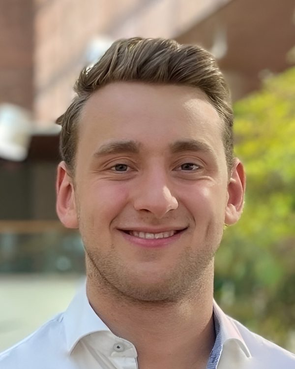

Ben Savinson
I'm working on the future of computing hardware, from new architectures and better chip design tools to the fundamental processes used to manufacture semiconductors.
As a PhD candidate at ETH Zurich, supervised by David Norris and Siddhartha Mishra, I combine AI and numerical methods to study how physical systems can process information. I'm also a co-founder of Veltron Labs, where we build agentic workflows and physical simulations for semiconductor manufacturing and chip design.
Previously, I worked on stochastic computation with physical systems at MIT and researched semiconductor materials at Harvard University. I studied physics as an Excellence Scholar at ETH Zurich and worked on high-Q optical cavities at the École Normale Supérieure in Paris and on electronic circuit design at the Paul Scherrer Institute.

Publications
-
Terminal-Bench-Science: Evaluating AI agents on research workflows across scientific domains
Contributed the task “Calibration and optimization for computational inverse lithography”.
- Universality of physical neural networks with multivariate nonlinearity
- Broadband, compact, and training-free optical processors for parallel image classification
- Narrow-linewidth emission and weak exciton–phonon coupling in 2D layered germanium halide perovskites